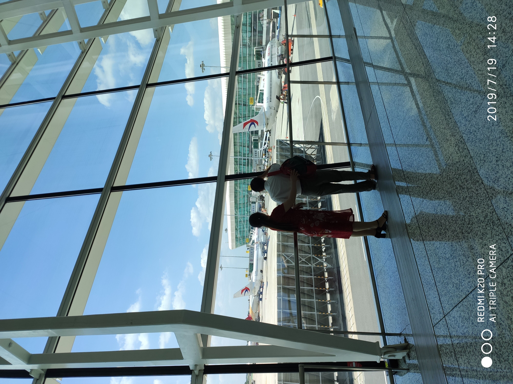
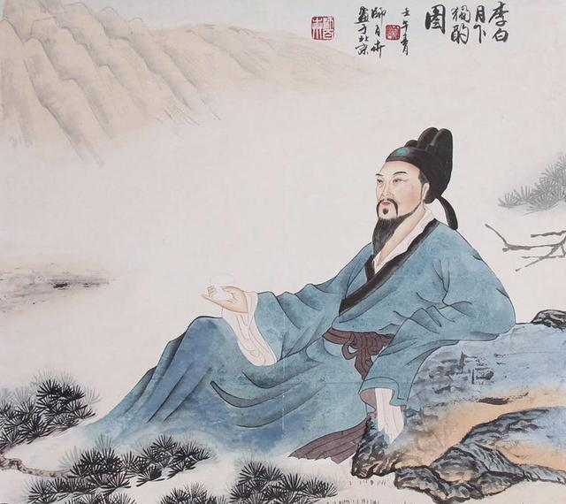

<一枝红艳露凝香，云雨巫山枉断肠。>
<借问汉宫谁得似，可怜飞燕倚新妆。>
 
李白人物简介：
李白（701年－762年） ，字太白，号青莲居士，是唐代伟大的浪漫主义诗人，被后人誉为“诗仙”。据《新唐书》记载bai，李白为兴圣皇帝（凉武昭王李暠）九世孙，与李唐诸王同宗。其人爽朗大方，爱饮酒作诗，喜交友。
李白深受黄老列庄思想影响，有《李太白集》传世，诗作中多以醉时写的，代表作有《望庐山瀑布》《行路难》《蜀道难》《将进酒》《梁甫吟》《早发白帝城》等多首。
下载文件
回到顶部